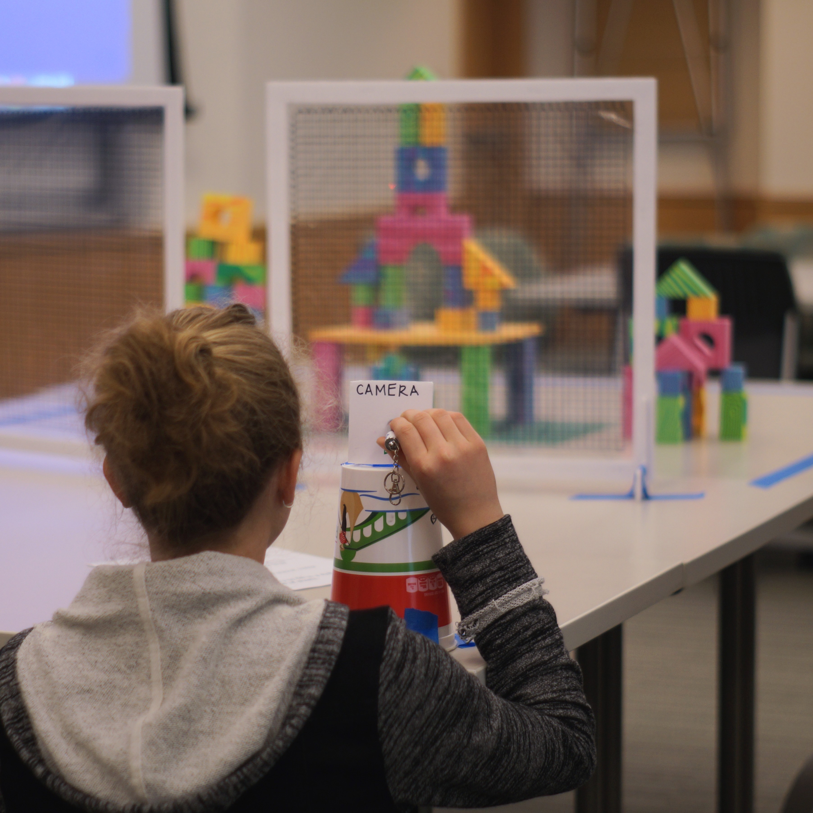
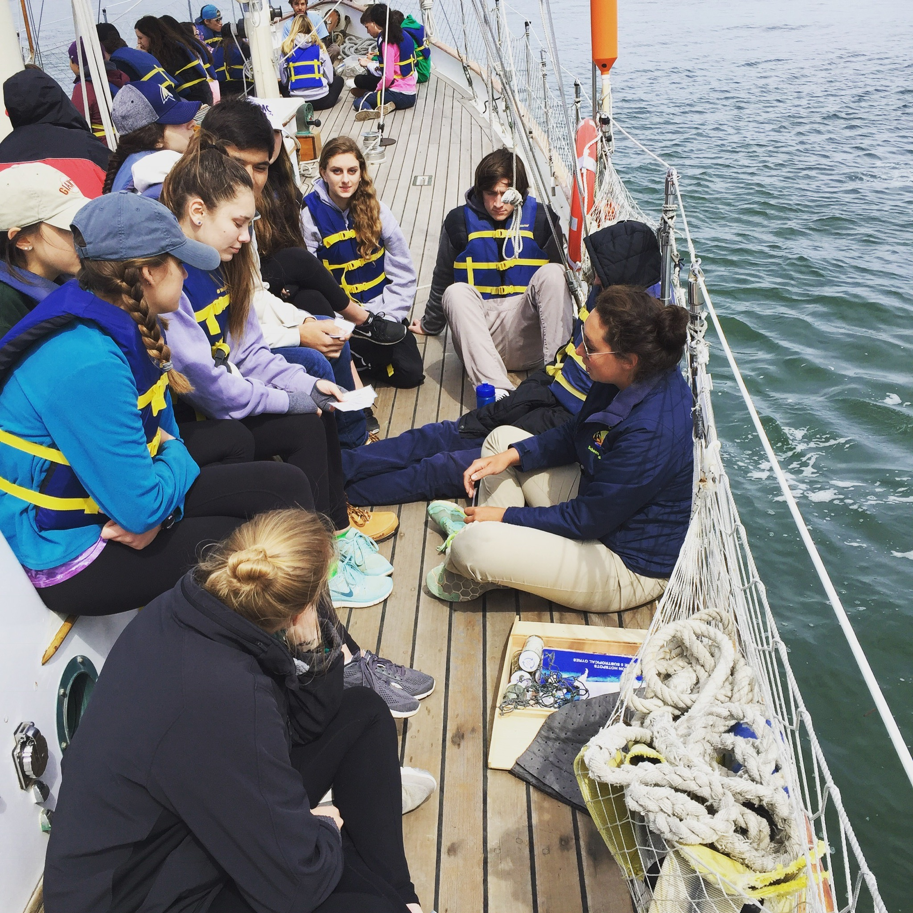

Education
I am very interested in finding creative, engaging, and effective teaching tools for computer science and other scientific fields.

Reading Course Instructor
I designed and ran the graduate reading course in winter 2020 for Master's in Digital Arts students at Dartmouth. I wrote the syllabus and assignments, ran discussions, and arranged presentations from guest speakers. I strove to encourage curiosity in the students and build my repertoire of teaching skills by testing some interactive learning techniques.

Science Day Station Leader
Science Day at Dartmouth is an annual event where graduate students teach kids about their research and plan fun, hands-on activities. I designed and organized a computer graphics station that taught kids and parents about some of the science behind their favorite movies and video games and we did ray tracing in real life!

Deckhand
As a deckhand and educator on tall ships for Call of the Sea and Sea Education Association, I have taught elementary- to college-aged students basics of sail theory, marine ecology, oceanographic research, modern and historical navigation techniques, and seamanship.